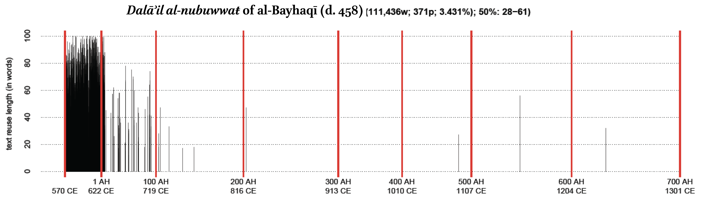
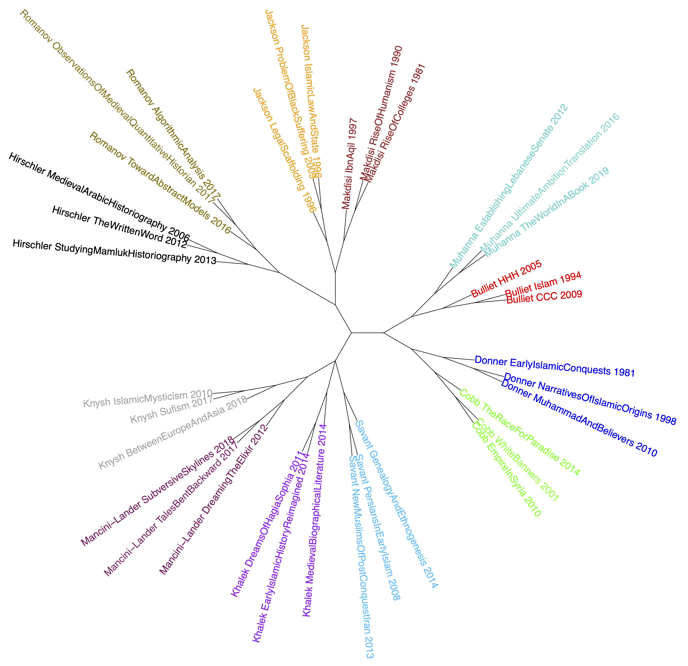
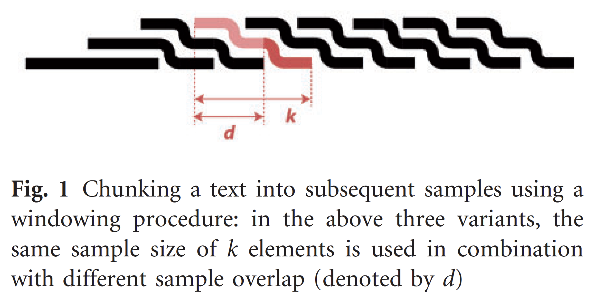
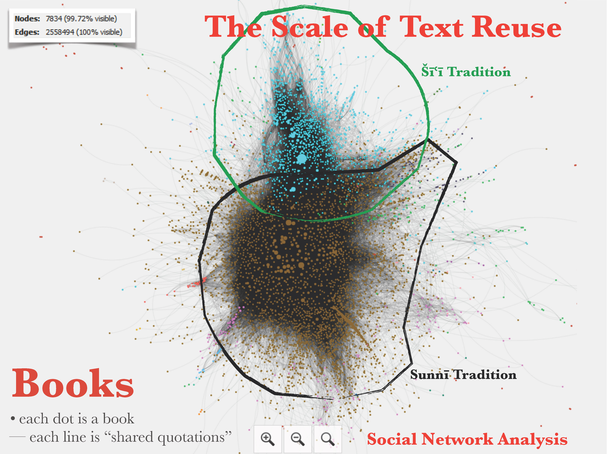

background-image: url(./images/background.png) background-size: contain class: center, bottom # Big Data and Mega Corpora in the Middle East Studies ## *The Case of Arabic Written Tradition* ⥈ Maxim Romanov Department of History, U Vienna *&* KITAB Project, Aga Khan U–London ??? - presentation: <https://tinyurl.com/Romanov-DJA-Presentation> - info on the workshop: <https://www.diejungeakademie.de/aktivitaeten/veranstaltungen-und-oeffentliche-auftritte/termin/event/calendar/workshop-hack-the-middle-east/view-list%7Cpage_id-8/2020/08/11/> --- background-image: url(./images/background.png) background-size: contain class: center, bottom # Premises # Resources # Methods *&* Findings --- background-image: url(./images/background.png) background-size: contain class: center, middle # Premises --- # Defining DH [**methodological exigency**] The transition to digital humanities must begin somewhere at the point where our humanistic inquiry starts to rely on the machine as the matter of methodological exigency. .red.bold[*] .footnote[.red[*] Romanov, Maxim G. “A Digital Humanities for Premodern Islamic History.” <i>International Journal of Middle East Studies</i> 50, no. 01 (February 2018): 129–34. <https://doi.org/10.1017/S0020743817001015>] ??? >> Defining digital humanities is tricky. Our scholarship has been intrinsically digital for quite a few decades already, as we rely more and more on electronic storage to save, word processors to write, bibliography managers to organize, databases to consult, digital libraries to search and read. Living in the digital world, however, does not make us all digital humanists—if these digital entities are taken away, we will have their analog prototypes to fall back on, and beyond a certain level of inconvenience, this will not affect the way most of us do our scholarship. The transition to digital humanities must begin somewhere at the point where our humanistic inquiry starts to rely on the machine as the matter of methodological exigency --- background-image: url(./images/background.png) background-size: contain class: center, bottom # Resources ## • Corpus • --- class: middle, center # Corpus --- # Library Vs. Corpus - **Libraries** - *al-Maktabaŧ al-Šāmilaŧ* (<https://www.shamela.ws/>) - *al-Jāmiʿ al-Kabīr* (HDD, *al-Turāṯ*) - *Maktabaŧ al-Šīʿaŧ* (<http://shiaonlinelibrary.com/>) - *Kitābḫāna-yi Dījītāl-i Nūr* (<https://www.noorlib.ir/>) - *and quite a few others*... - **Corpus** - *Open Islamicate Texts Initiative* (*OpenITI*) - *website*: <https://openiti.org/> - *corpus*: <https://github.com/OpenITI> - LATEST RELEASE: Lorenz Nigst, Maxim Romanov, Sarah Bowen Savant, Masoumeh Seydi, *&* Peter Verkinderen. (2020). *OpenITI: a Machine-Readable Corpus of Islamicate Texts (Version 2020.1.2)* [Data set]. Zenodo. [](https://doi.org/10.5281/zenodo.3891466) - **NB:** started as *OpenArabic* under the patronage of Dr. Gregory Crane (at Perseus Digital Library and Leipzig U) --- # *OpenITI: co-PIs* <img src="./images/02.png" alt="Drawing" style="width: 750px;"/> --- # *OpenITI: GitHub* --- # *OpenITI: URI Structure* --- # *OpenITI: Folder Structure* --- # *OpenITI: Coverage* <img src="./images/open_iti.png" alt="Drawing" style="width: 750px;"/> - Statistics: - *c.* 1800 authors - *c.* 4,300 unique titles (700 mln words) - *c.* 7,100 texts altogether (1,46 billion words) ??? *Chronological distribution of texts*. OpenArabic—an earlier instance of OpenITI—now constitutes 99% of the OpenITI Corpus. The graph above shows the chronological coverage of the OpenITI corpus, making it clear that pre-1500 period is covered more thoroughly. --- # *OpenITI: Releases* - *ongoing work* (within the KITAB Project) - structural annotation - *OpenITI mARkdown*: <https://maximromanov.github.io/mARkdown/> - URI verification - metadata collection - metadata app: <https://kitab-corpus-metadata.azurewebsites.net/> - expansion: - scraping open Internet libraries - OCR-ing printed editions - .red[LATEST RELEASE:] Lorenz Nigst, Maxim Romanov, Sarah Bowen Savant, Masoumeh Seydi, *&* Peter Verkinderen. (2020). *OpenITI: a Machine-Readable Corpus of Islamicate Texts (Version 2020.1.2)* [Data set]. Zenodo. [](https://doi.org/10.5281/zenodo.3891466) --- # *OpenITI: Zenodo Release* <img src="./images/zenodo_release.png" alt="Drawing" style="width: 750px;"/> --- background-image: url(./images/background.png) background-size: contain class: center, bottom # Methods ## • Similarities • ## • Modeling • --- # Similarities .large[ .red[- topic modeling - text reuse detection - stylometry] - and many other methods (*k-means clustering*, *hierarchical clustering*, *tf-idf*, etc.) ] --- # The latest updates: <http://kitab-project.org/blog/> --- # *Topic Modeling* <img src="./images/01.png" alt="Drawing" style="width: 700px;"/> - biographies of women in al-Ḏahabī’s *Taʾrīḫ al-islām* ??? Topic #20 in al-Dhahabi’s “History” is on biographies of women. The topic is identified through the following shared tokens, most of which include feminine words, verbs in feminine forms, female pronouns, and prepositional phrases with feminine pronominal suffixes: (1) “daughter”; (2) “mother”; (3) “from-her”, i.e., [transmitted religious knowledge] “from her”; (4) “Fatima”, a female name; (5) “[she]-died”; (6) “to-her”; (7) “and-she”; (8) “[she] transmitted”; (9) “and-[she]-was”; (10) “and-[she]-died”; (11) “and-Fatima”, a female name; ... (14) “from-her” [the knowledge was transmitted]; (15) “sister”; (16) “pious” — feminine form; (17) “Zaynab”, a female name; (18) “and-[she]-listened”, i.e., she studied [with someone]; … and so on. --- # *Text Reuse (TR)* <img src="./images/tr_example01.png" alt="Drawing" style="width: 700px;"/> --- # TR: *passim*.red.bold[*] <img src="./images/tr_example02.png" alt="Drawing" style="width: 700px;"/> .footnote[.red.bold[*]developed by David Smith, Northeastern University, USA] --- # TR: *Taʾrīḫ al-islām* <img src="./images/ex01.png" alt="Drawing" style="width: 750px;"/> <img src="./images/ex02.png" alt="Drawing" style="width: 750px;"/> --- # TR: *Taʾrīḫ al-islām*  <img src="./images/ex04.png" alt="Drawing" style="width: 750px;"/> --- # TR: *Taʾrīḫ al-islām* <img src="./images/ex05.png" alt="Drawing" style="width: 750px;"/> <img src="./images/ex06.png" alt="Drawing" style="width: 750px;"/> --- # TR: *Taʾrīḫ al-islām* <img src="./images/ti_textreuse.png" alt="Drawing" style="width: 750px;"/> --- # *Stylometry* .large[Eder, Maciej, Jan Rybicki, and Mike Kestemont. “Stylometry with R: A Package for Computational Text Analysis.” *The R Journal* 8, no. 1 (August 2016): 107–121.] --- # *Stylometry*  --- background-image: url(./images/bct_colleagues_test_Consensus_600-800_MFWs_Culled_10-50_Classic_Delta_C_0.5_001_AI.png) background-size: contain --- background-image: url(./images/consensus_tree_hindawi_ai.png) background-size: contain --- background-image: url(./images/gephi_network_hindawi_ai.png) background-size: contain --- # *Rolling Stylometry*  .footnote[Eder, Maciej. “Rolling Stylometry.” *Digital Scholarship in the Humanities* 31, no. 3 (September 1, 2016): 457–69. <https://doi.org/10.1093/llc/fqv010>. ] --- background-image: url(./images/rs03.png) background-size: contain --- # Modeling .large[ - text reuse network (SNA) - algorithmic analysis: - text-mining - social geography (SNA) - cultural production ] --- class: center, middle # *Tradition through Text Reuse* --- background-image: url(./images/04.jpg) background-size: contain --- background-image: url(./images/05.jpg) background-size: contain --- background-image: url(./images/06.jpg) background-size: contain --- class: center, middle # *Algorithmic Analysis (A2)* ## Ismāʿīl Bāšā al-Baġdādī (d. 1339/1920) and his *Hadiyyaṯ al-ʿārifīn* (“The Gift to the Knowledgeable”) • **Data** • descriptive names (Ar. *nisbaŧ*) • places (toponyms) • dates • book titles • --- # *A2: Text-Mining* <img src="./images/01.jpg" alt="Drawing" style="width: 800px;"/> --- # *A2: Text-Mining* <img src="./images/02.jpg" alt="Drawing" style="width: 800px;"/> --- # *A2: Text-Mining*  --- # *A2: Text-Mining* <img src="./images/04.jpg" alt="Drawing" style="width: 800px;"/> --- # *A2: Books* <img src="./images/ha_authors.png" alt="Drawing" style="width: 700px;"/> <img src="./images/ha_books.png" alt="Drawing" style="width: 700px;"/> --- # *A2: Regions* <img src="./images/graph_bar.png" alt="Drawing" style="width: 800px;"/> --- # *A2: Regions Over Time* <img src="./images/rot_iraq.png" alt="Drawing" style="width: 800px;"/> <img src="./images/rot_iran.png" alt="Drawing" style="width: 800px;"/> --- # *A2: Regions Over Time* <img src="./images/rot_misr.png" alt="Drawing" style="width: 800px;"/> <img src="./images/rot_sham.png" alt="Drawing" style="width: 800px;"/> --- # *A2: Regions Over Time* <img src="./images/rot_rum.png" alt="Drawing" style="width: 800px;"/> --- background-image: url(./images/HA_Connections1100-1200_Period100.png) background-size: contain # *A2: Cultural Connections* .footnote[The Iraqi-Iranian core in the twelfth century CE] --- background-image: url(./images/HA_Connections1200-1300_Period100.png) background-size: contain # *A2: Cultural Connections* .footnote[Massive migrations of the thirteenth century CE] --- background-image: url(./images/HA_Connections1400-1500_Period100.png) background-size: contain # *A2: Cultural Connections* .footnote[New Mamlūk core of the fourteenth and fifteenth centuries CE] --- background-image: url(./images/HA_Connections1500-1600_Period100.png) background-size: contain # *A2: Cultural Connections* .footnote[Reconfiguration of the sixteenth century CE] --- background-image: url(./images/HA_Connections1700-1800_Period100.png) background-size: contain # *A2: Cultural Connections* .footnote[The Turco-Arabic and Indo-Iranian cores in the eighteenth century] --- background-image: url(./images/background.png) background-size: contain class: center, middle # Questions? --- background-image: url(./images/background.png) background-size: contain class: center, middle # Thank you!